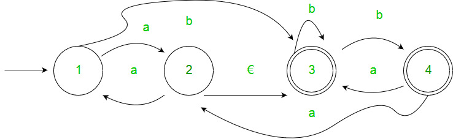
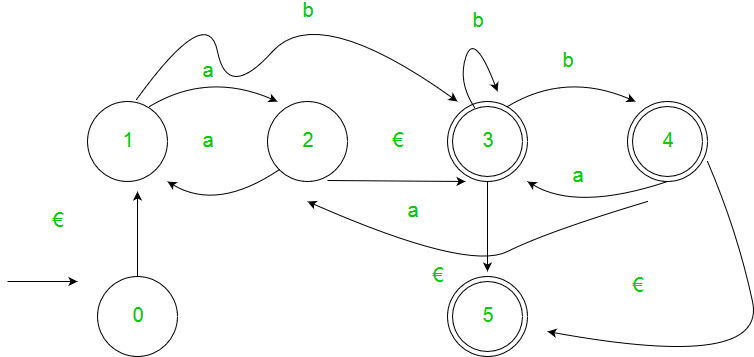
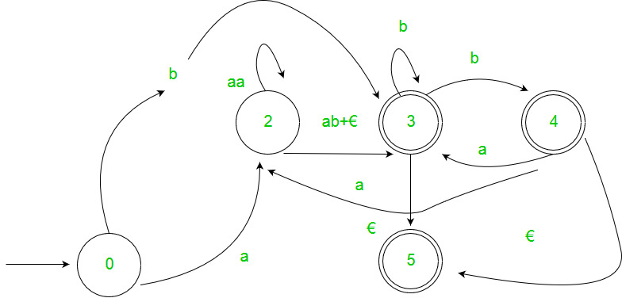
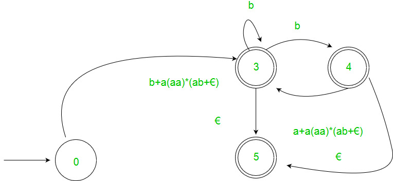
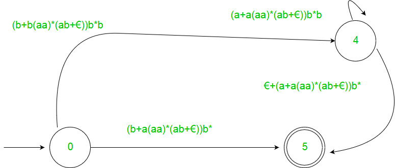
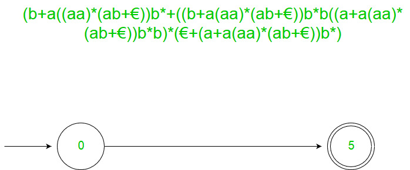
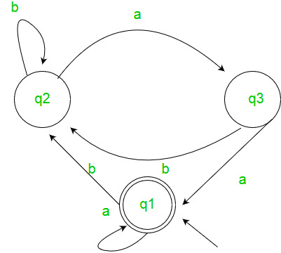

Generating regular expression from Finite Automata
Prerequisite – Introduction of FA, Regular expressions, grammar and language, Designing FA from Regular Expression. There are two methods to convert FA to the regular expression:
1. State Elimination Method:
- Step 1 - If the start state is accepting or has transitions in, add a new non-accepting start state and a €-transition between the new and prior start states.
- Step 2 - Add a new accepting state, make all other states non-accepting, and add a €-transition from each former accepting state to the new accepting state if there is more than one acceptable state or if the only accepting state has transitioned out.
- Step 3 - Remove each non-start, non-accepting state in turn and edit transitions accordingly.
Example :

Solution:





2. Arden’s Theorem:
Let P and Q be 2 regular expressions. If P does not contain null string, then the following equation in R, viz R = Q + RP, Has a unique solution by R = QP*
Assumptions –
- The transition diagram should not have €-moves.
- It must have only one initial state.
Using Arden’s Theorem to find Regular Expression of Deterministic Finite automata –
- For getting the regular expression for the automata we first create equations of the given form for all the states q1 = q1w11 +q2w21 +…+qnwn1 +€ (q1 is the initial state) q2 = q1w12 +q2w22 +…+qnwn2 . . . qn = q1w1n +q2w2n +…+qnwnn wij is the regular expression representing the set of labels of edges from qi to qj
- Then we solve these equations to produce the equation for qi in terms of wij, which is the needed solution, where qi is a final state.
Example:

Solution :- Here the initial state is q1 and the final state is q1. The equations for the three states q1, q2, and q3 are as follows ? q1 = q1a + q3a + € ( € move is because q1 is the initial state) q2 = q1b + q2b + q3b q3 = q2a Now, we will solve these three equations ? q2 = q1b + q2b + q3b = q1b + q2b + (q2a)b (Substituting value of q3) = q1b + q2(b + ab) = q1 (b + ab)* (Applying Arden’s Theorem) q1 = q1a + q3a + € = q1a + q2aa + € (Substituting value of q3) = q1a + q1b(b + ab*)aa + € (Substituting value of q2) = q1(a + b(b + ab)*aa) + € = € (a+ b(b + ab)*aa)* = (a + b(b + ab)*aa)* Hence, the regular expression is (a + b(b + ab)*aa)*